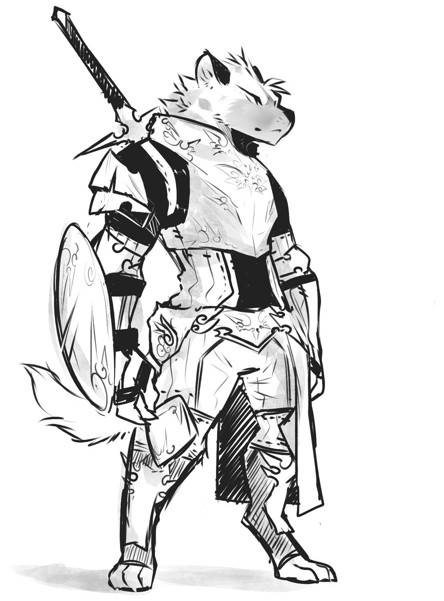
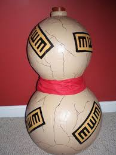
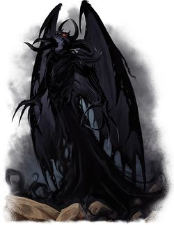

Bien! Par où commencer ? je me nomme Freck.Je suis un Gobelin de 20 ans. Je mesure un peu prêt 1m30 pour 60 Kg. Un grand gobelin je vous l'accorde.
Les miens vivent dans la forêt à l'ouest de new katay. Actuellement en plein Empire humain mais à ma naissance et mon époque, les humains n'existez pas sur ce continent du monde.
Mon enfance est plutôt basique pour un gobelin. Avec les copains ont détroussé les voyageurs et fuyé en riant de leur malheur. La chasse était amusante, et tout était pour nous sujet à rire.
Un jour, cela dit, nous avons attaqué la mauvaise personne. Je fus le seul survivant. Certaines nuits j'entends encore le bruit des os brisé, des cris de douleur de mes amis.
Je revois encore ce monstre, en métal. Cette peur et le retour à la réalité. Nous sommes faibles. Et les gens aiment nous tuer, nous traquer. Nous comblons par le nombre mais cela ne suffit pas toujours. C'est ce qui m'a motivé à entreprendre un petit voyage en quête de puissance pour sauver les miens.
Je suis partie 2 mois, et j'ai entendu des rumeurs sur un magicien qui aurait des artefacts magiques. Je me suis faufilé chez lui quand il était absent, j'ai poireauté 2 jours pour ça.
J'ai fouillé sa maison, trouver bon nombre d'objets et de potion jusqu'à ce que je revois cette jarre maudite...si j'aurais pu ne pas être curieux et cupide. Mais je suis un gobelin! et fier de l'être!
Mettez une jarre severement scellée et le 1er gobelin venue voudra faire qu'une chose...l'ouvrir. est-ce vraiment ma faute ? non!
Une fois les bande retirée la jarre s'est ouverte sur un démon. J'étais tétanisé mais je voulus aussi profiter de la situation. Je l'ai libéré! je suis son maitre!

N'importe qui aurait prit peur devant ce froncement de sourcil mais que voulais vous ? je suis un peu idiot.
Le démon s'ouvre la main, d'un sang noir comme la plus sombre des nuits.
Non, il n'a quand même pas bu ? c'est ce que je vous entends déjà dire avec horreur. Et bien SI! Avide que j'étais. TRÈS avide.
Le gout était horrible et je me sentais pris d'un malaise...je ne me souviens plus vraiment de ce qui s'est passé durant le mois qui est. Mais il est clair que le démon que j'ai libéré c'est jouer de moi. J'étais cupide je voulais juste être plus fort pour sauver les miens contre l'arrivée des humains et me venger du chevalier. Durant ce mois d'absence durant lequel je fus le jouet du démon, les humains nous ont chassés de chez nous et apparemment j'en serais le fautif. J'aurais été tuer un de leurs chefs et sa les aurais mis en rogne contre les gobelins.
Je voulais Gloire ? je fus détester par tous une race et hais par la mienne.
En guise de beauté j'ai eu cette odeur surnaturelle qui ne me quitte jamais, ni bonne ni mauvaise elle éveille une méfiance à mon égard envers les gens.
La richesse...j'ai eu de l'or, tellement d'or que je pouvais pas me déplacer... J'ai repris conscience de moi et de mon propre corps et esprit couché sur un immense tas d'or. J'eus à peine le temps d'en profiter de ce qu'une troupe humaine qui devait justement me traquer suite à mon assassinat m'a trouvé. Je me demande si je ne suis pas à l'origine de la légende du gobelin au trésor. Autant vous dire que j'ai passé un sale quart d'heure, ils m'ont botté le cul, tranché les mains, la langue, et transpercer de part en part. Une mort atroce. C'est là qu'heureusement la malédiction du démon a eu du bon. Je suis immortel. Ma punition pour avoir tenté de profiter d'un démon. Puni a erré jusqu'à nuit des temps, voir le monde changer, les proches pourrir et finir par être seul. Je suis devenu fortement égoïste au fil du temps.
AH, j'oubliais pour la force, bon j'avoue je suis plutôt une bonne rogue de base hais désormais c'est surtout la force de mourir sans jamais mourir. c'est surtout ça m'a force...note pour vous, ne jamais tentée de libérer un démon et d'en faire un esclave...les demons aime pas ça.